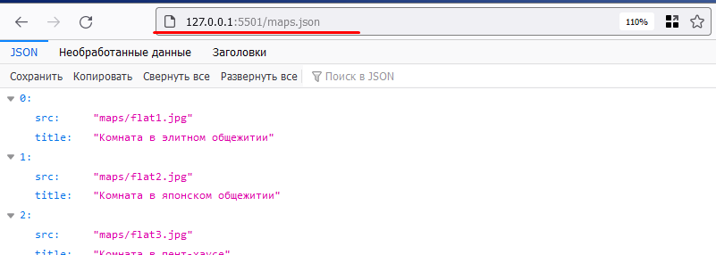

202202151200 fetch maps.json
Что-бы выполнить HTTP-запрос, наша HTML-страница должна быть на каком-нибудь простом WEB/HTTP-сервере, иначе могут возникнуть ограничения браузера при попытке отправить запрос.
Проверка доступности файла maps.json по HTTP
К счастью Live-Server - это и есть просто HTTP-сервер. И карта maps.json будет
доступна по HTTP точно также как и index.html:

Поэтому мы будем делать относительный запрос (относительно index.html) к
./maps.json (или просто maps.json):
Теперь, мы можем убедится в разделе отладки что HTTP-запрос выполнился:
Отправка HTTP-запроса методом fetch()
Метод fetch не выполняет HTTP-запрос сразу, а говорит браузеру его сделать и
возвращает в JS объект Promise, то есть обещание, которое когда-нибудь будет
выполнено. Чтобы обработать результат Promise-а нам нужно зарегистрировать
колбэк (Функцию обратного вызова), который выполнится, когда браузер
совершит HTTP-запрос.
Делается это с помощью метода .then(callback):

Обновляем страницу, смотрим результат в консоли:

Получение JSON-данных в виде JavaScript-объекта (Парсинг JSON)
Чтобы из HTTP-ответа данные распарсились как JSON-объект есть метод .json(),
которые это сделает. Но он также возвращает Promise, поэтому код будет выглядеть так:

И проверка в консоли:

Следующие шаги
- Ура мы получили массив из JSON-файла запросом, теперь можем перейти к
отображению карт на
Экране Выбора Карт. - В данном примере мы сделали работу на
Promiseв учебных целях, стоит прочитать про них подробнее и перейти наasync/await. См JS-Марафон. 8 день